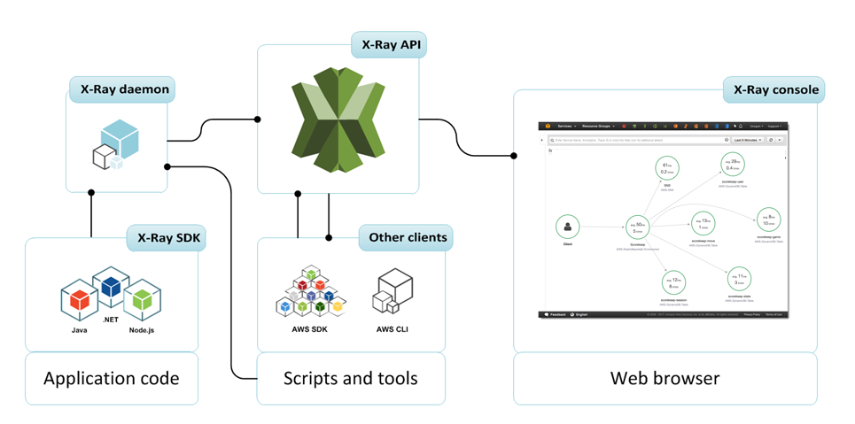

X-Ray¶
Introduction¶
AWS X-Ray is a distributed tracing service that helps developers analyze and debug production, distributed applications. It provides an end-to-end view of requests as they travel through your application, showing a map of your application’s underlying components and detailed information about requests and responses. AWS X-Ray helps developers analyze and debug production, distributed applications, such as those built using a microservices architecture. With X-Ray, you can understand how your application and its underlying services are performing to identify and troubleshoot the root cause of performance issues and errors. X-Ray provides an end-to-end view of requests as they travel through your application, and shows a map of your application’s underlying components. You can use X-Ray to collect data across AWS Accounts. The X-Ray agent can assume a role to publish data into an account different from the one in which it is running. This enables you to publish data from various components of your application into a central account.
Architecture¶
Application → X-Ray SDK → X-Ray Daemon → X-Ray API
(2000/UDP) (443/HTTPS)

Core Concepts¶
Segments¶
- Represent the work done by individual services and resources
- Contain timing and other data
- Include:
- Host information
- Request information
- Response information
- Work done
- Issues that occur
Subsegments¶
- Provide more granular timing information
- Can represent:
- Downstream calls
- SQL queries
- Internal functions
- Custom operations
Traces¶
- Collection of segments generated by a single request
- End-to-end path through your application
- Include:
- Timing data
- Dependencies
- Errors and faults
Service Graph¶
- Visual representation of your application
- Shows connections between services
- Highlights:
- Latency
- Error rates
- Request rates
X-Ray Daemon¶
Overview¶
The X-Ray daemon is a software application that listens for traffic on UDP port 2000, collects raw segment data, and relays it to the AWS X-Ray API. It serves as a local buffer and intermediary between your application and the X-Ray service.
Daemon Deployment Models¶
- EC2 Instance Deployment
- Installed directly on EC2 instances
- Runs as a background service
-
One daemon per instance
# Installation on Amazon Linux sudo yum install -y aws-xray-daemon # Start daemon sudo /etc/init.d/xray start -
Container Deployment
- Runs as a sidecar container
-
One daemon per pod/task
# ECS Task Definition example { "name": "xray-daemon", "image": "amazon/aws-xray-daemon", "cpu": 32, "memoryReservation": 256, "portMappings": [{ "hostPort": 2000, "containerPort": 2000, "protocol": "udp" }] } -
Kubernetes Deployment
apiVersion: apps/v1 kind: DaemonSet metadata: name: xray-daemon spec: selector: matchLabels: app: xray-daemon template: metadata: labels: app: xray-daemon spec: containers: - name: xray-daemon image: amazon/aws-xray-daemon ports: - containerPort: 2000 protocol: UDP
Daemon Configuration¶
-
Buffer Settings
{ "TotalBufferSizeMB": 100, "Concurrency": 8, "Region": "us-west-2", "Socket": { "UDPAddress": "127.0.0.1:2000", "TCPAddress": "127.0.0.1:2000" } } -
Local Mode
{ "LocalMode": true, "LocalEndpoint": "http://localhost:8000" } -
Proxy Configuration
{ "ProxyAddress": "http://proxy.example.com:3128", "NoProxyAddresses": "169.254.169.254,169.254.170.2" }
Daemon Monitoring¶
- Telemetry
- Segments received
- Segments rejected
- Segments sent
-
Segments pending
-
CloudWatch Metrics
# Python example of custom daemon monitoring xray_recorder.begin_segment('daemon_monitor') try: response = requests.get('http://localhost:2000/GetDaemonStats') metrics = response.json() # Process metrics finally: xray_recorder.end_segment()
Sampling Architecture¶
Sampling Concepts¶
- Reservoir
- Guaranteed trace count per second
- Ensures minimum sampling coverage
-
Fixed number of traces per second
-
Fixed Rate
- Percentage of additional traces
- Applied after reservoir is filled
- Scales with traffic volume
Sampling Rules Structure¶
{
"SamplingRule": {
"RuleName": "api-calls",
"Priority": 1,
"FixedRate": 0.1,
"ReservoirSize": 5,
"ServiceName": "api-service",
"ServiceType": "AWS::EC2::Instance",
"Host": "*",
"HTTPMethod": "POST",
"URLPath": "/api/*",
"Version": 1
}
}
Sampling Rule Components¶
- Matching Criteria
- ServiceName
- ServiceType
- Host
- HTTPMethod
-
URLPath
-
Sampling Parameters
{ "FixedRate": 0.05, // Sample 5% of matching requests "ReservoirSize": 10, // Guarantee 10 traces per second "Priority": 1, // Lower number = higher priority "Version": 1 }
Sampling Rule Examples¶
-
Debug Mode Rule
{ "SamplingRule": { "RuleName": "Debug", "Priority": 1, "FixedRate": 1.0, "ReservoirSize": 100, "HTTPMethod": "*", "URLPath": "/debug/*", "Version": 1 } } -
Low Traffic Service Rule
{ "SamplingRule": { "RuleName": "LowTraffic", "Priority": 100, "FixedRate": 0.1, "ReservoirSize": 1, "ServiceName": "background-service", "Version": 1 } }
Dynamic Sampling¶
- Sampling Rule Manifest
- Downloaded by X-Ray daemon
- Updated every few minutes
-
Centralized configuration
-
Sampling Rule Statistics
{ "RuleName": "api-calls", "Requests": 100, "Sampled": 10, "BorrowCount": 0 } -
Quota Management
- Distributed across all daemons
- Automatically adjusted based on load
- Ensures fair distribution
Best Practices for Sampling¶
- Rule Priority
- Critical paths: Higher priority
- Debug endpoints: Higher priority
-
Default rule: Lowest priority
-
Resource Optimization
{ "SamplingRule": { "RuleName": "OptimizedDefault", "Priority": 10000, "FixedRate": 0.01, "ReservoirSize": 5, "HTTPMethod": "*", "URLPath": "*", "Version": 1 } } -
Sampling Strategy
- High-value transactions: Higher sampling rates
- Error paths: Higher sampling rates
-
Background jobs: Lower sampling rates
-
Monitoring and Adjustment
# Python example of sampling monitoring from aws_xray_sdk.core import xray_recorder @xray_recorder.capture('sampling_monitor') def monitor_sampling(): client = boto3.client('xray') response = client.get_sampling_rules() for rule in response['SamplingRuleRecords']: # Analyze rule effectiveness pass
Monitoring and Analysis¶
1. Service Map Analysis¶
- Visualize application topology
- Identify bottlenecks
- Track error rates
- Monitor latency
2. Trace Analysis¶
- Debug individual requests
- Analyze error causes
- Track timing issues
- Identify slow components
3. Analytics¶
- Filter traces by:
- Response time
- Error types
- User attributes
- Custom annotations
Best Practices¶
1. Sampling Strategy¶
- Configure appropriate sampling rates
- Use dynamic sampling
- Adjust based on traffic patterns
- Consider cost implications
2. Instrumentation¶
- Use automatic instrumentation where possible
- Add custom instrumentation for business logic
- Include relevant annotations
- Add helpful metadata
3. Error Handling¶
- Capture exceptions properly
- Add error context
- Use fault and error flags appropriately
- Include stack traces
4. Performance¶
- Monitor daemon performance
- Configure appropriate buffer sizes
- Use sampling effectively
- Monitor trace quota usage
Common Use Cases¶
1. Performance Monitoring¶
- Track service latencies
- Identify bottlenecks
- Monitor SLA compliance
- Analyze performance patterns
2. Error Detection¶
- Track error rates
- Debug production issues
- Monitor fault rates
- Analyze error patterns
3. Dependency Analysis¶
- Map service dependencies
- Track downstream impacts
- Monitor integration points
- Analyze connection patterns
Troubleshooting¶
Common Issues¶
- Missing Traces
- Check sampling rules
- Verify daemon configuration
- Check IAM permissions
-
Verify SDK integration
-
Incomplete Traces
- Check service integration
- Verify networking
- Check timeout settings
-
Review segment configuration
-
Performance Issues
- Monitor daemon resources
- Check buffer configuration
- Verify sampling rates
- Review trace sizes
Cost Optimization¶
1. Sampling Strategies¶
- Implement appropriate sampling rates
- Use dynamic sampling
- Configure by endpoint importance
- Monitor trace volume
2. Storage Optimization¶
- Configure retention periods
- Use appropriate trace sizes
- Monitor storage usage
- Clean up unused traces
3. Resource Usage¶
- Monitor daemon performance
- Optimize buffer sizes
- Configure appropriate resources
- Monitor API usage
Security¶
1. IAM Configuration¶
{
"Version": "2012-10-17",
"Statement": [
{
"Effect": "Allow",
"Action": [
"xray:PutTraceSegments",
"xray:PutTelemetryRecords"
],
"Resource": "*"
}
]
}
2. Encryption¶
- Data encryption at rest
- Data encryption in transit
- Key management
- Access controls